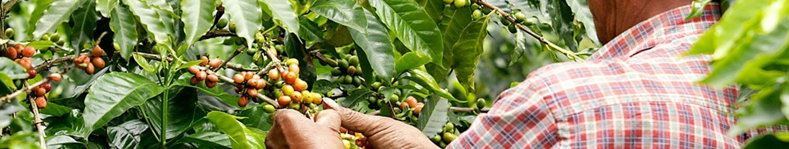
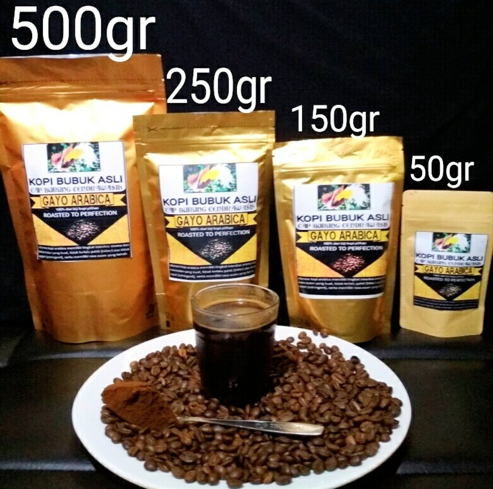
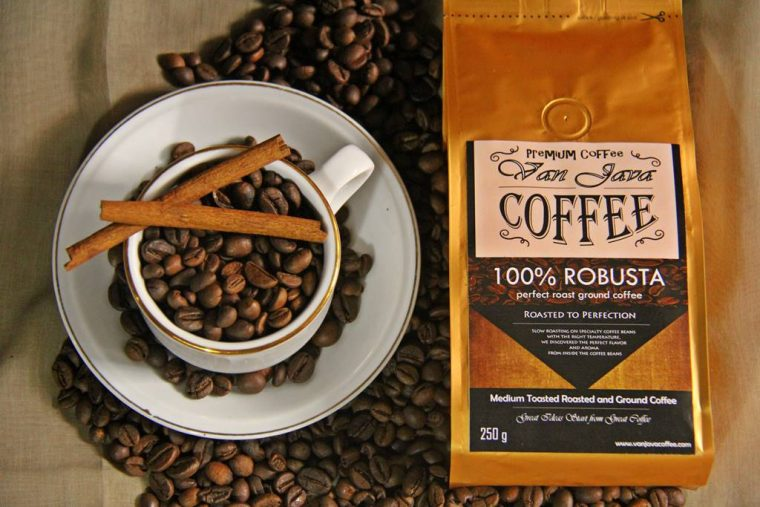

Posting Teratas

Baca selengkapnya >>>>>
Kopi Arabika
Lebih Dekat Dengan Kopi Arabika
Kopi Arabica merupakan jenis kopi tradisional dengan cita rasa terbaik. Tidak heran jika tanaman yang biasa tumbuh di daerah sejuk dan dingin ini menguasai pasar dunia yakni 70 % dari jumlahnya yang beredar di pasaran. Sebagian besar kopi yang ada dibuat dengan menggunakan biji jenis ini. Arabica sendiri berasal dari Eutopia dan sekarang sudah di budidayakan di berbagai penjuru dunia.Baca selengkapnya >>>>>

Baca selengkapnya >>>>>
Kopi Robusta
Mengenal Sihitam Robusta
Kopi Robusta yang pertama kali ditemukan di Kongo pada tahun 1898. Memiliki ukuran biji yang besar dan umumnya berbentuk besar. Robusta, dapat tumbuh di lingkungan sejuk maupun di lingkungan yang tergolong panas. Dimana jenis Arabika tidak dapat tumbuh....Baca selengkapnya >>>>>

Kopi Liberika
Selanjutnya adalah Kopi Liberika, jenis yang satu ini memang belum terlalu banyak beredar di pasaran dunia karena memang sangat sedikit produsen yang mengembangkannya. Liberika memiliki ciri-ciri bijinya yang ukurannya lebih besar dengan jenis Arabika dan Robusta.
Baca selengkapnya >>>>>